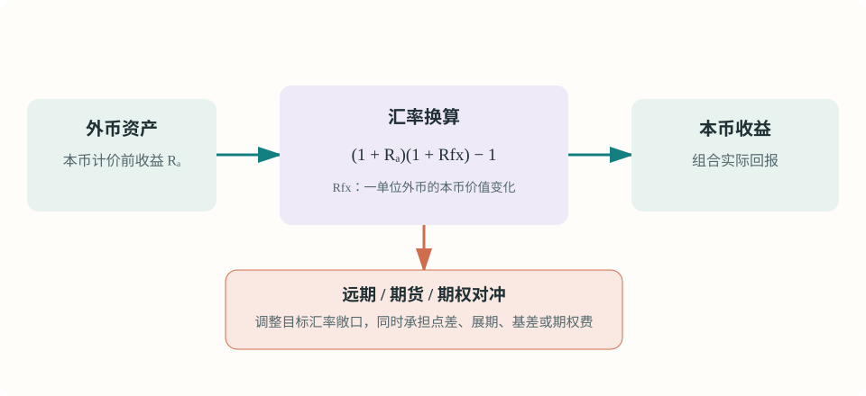
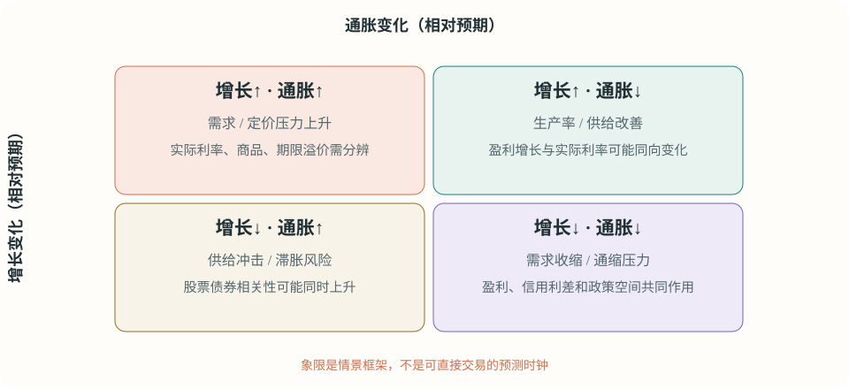
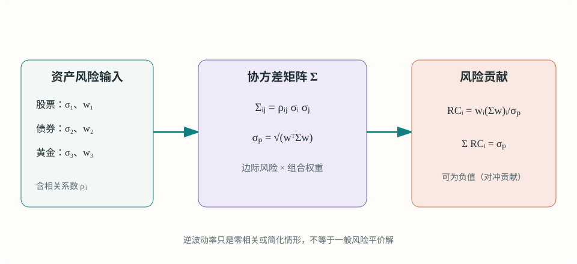

CHAPTER 27 · MACRO HEDGING & GLOBAL ALLOCATION
宏观对冲与全球配置：风险、汇率与投资边界
全球分散不等于自动降低风险；必须同时衡量资产相关性、货币敞口、市场准入、对冲成本与投资者约束。
海外股票上涨了，为什么换成本币后组合收益可能接近零？
假设一项海外资产以外币计价，一年上涨8%；同期该外币相对本币贬值5%。投资者最终衡量的是本币资产价值，不能只看海外指数或基金净值的外币涨幅。汇率变化会放大或抵消底层资产回报，短期甚至可能成为主要风险来源。
全球配置的目标也不是“买更多国家”这么简单。不同市场的盈利周期、利率、通胀、政策、流动性和汇率风险可能彼此相关；当市场进入供给冲击或美元流动性紧缩阶段，原本看似分散的资产可能同时下跌。真正的组合设计必须同时讨论资产风险、货币风险、对冲成本、市场准入和税务边界。

战略资产配置与择时选股：一项经典研究究竟说明了什么？
Brinson、Hood与Beebower在1986年研究了91家美国大型养老金计划1974—1983年的数据，报告称政策组合（按长期资产类别权重构建的被动基准）解释了平均93.6%的总计划收益时间序列变动。这个数字描述的是特定样本中收益随时间变化的统计解释比例，不是“资产配置贡献了93.6%的最终收益”，也不能直接推广到所有个人账户、所有国家和所有时期。
这项研究有价值的地方，是提醒研究者先定义长期政策组合、投资目标和基准，再衡量主动偏离、择时和证券选择的增量贡献。资产配置比例应来自投资者的期限、负债、现金流需求、风险承受能力、流动性和法规约束，而不是从一个历史百分比直接抄出股票/债券比例。
增长与通胀情景矩阵：用来组织风险，不是预测时钟
宏观研究可以把增长和通胀相对预期的变化组成四种情景。这里的“增长上行”并非GDP绝对值高，而是相对于市场原先预期的改善；“通胀上行”也应区分需求推动、供给冲击和汇率传导。实际利率、信用利差、盈利预期和政策反应可能比单一的GDP/CPI方向更重要。

例如，增长下降且通胀上升时，股票盈利预期可能下修，名义债券又可能因通胀风险溢价上升而承压；增长和通胀同时下降时，国债可能受益于利率下行，但信用债仍可能受违约风险和利差扩大影响。宏观情景是压力测试输入，不是可以直接预测市场转折点的“美林时钟”。
风险平价：权重不能只看各资产自己的波动率
如果三个资产的波动率分别是18%、6%和15%，简单逆波动率会给低波动债券更高资金权重。但这只是忽略相关性时的简化方案。只要股票、债券和黄金之间的协方差发生变化，组合波动与各资产风险贡献都会变化。尤其在通胀或流动性冲击中，历史相关性并不保证继续稳定。

设权重向量为w，协方差矩阵为Σ，组合年化波动率可写为：
完整风险平价通常要用协方差矩阵和数值优化求解等风险贡献。仅用1/σi分配权重隐含了零相关或特定简化条件。实际模型还要考虑杠杆、保证金、融资成本、交易容量、流动性和压力期相关性。
汇率换算：外币资产收益和汇率收益是乘法关系
令Rasset为外币计价资产回报，Rfx为“一单位外币折合多少本币”的汇率回报。未对冲时，本币回报为：
教学例子：海外资产以外币计价上涨8%，外币相对本币贬值5%，则本币回报为1.08×0.95−1=2.6%，而不是8%−5%=3%。这说明两项收益应按乘法合成。
若使用远期合约对冲，组合还要承担远期点、利差、展期、买卖价差、抵押品和基差风险。对冲比例也会随资产市值变化而偏离目标。下面的计算器使用一个简化的剩余汇率敞口代理，并将对冲成本按对冲名义金额近似扣除；它不是远期合约完整定价或现金流复制。
跨境投资渠道：产品准入、标的范围与投资者资格要分开
境内投资者获得境外资产敞口，可能通过QDII基金、互联互通机制或其他依法获准渠道实现。它们不是同一种产品：QDII是符合资格的境内机构募集资金并进行境外证券投资的制度安排；沪深港通只覆盖当期符合规则的证券和ETF，且投资者适当性、交易币种、结算安排和风险披露有专门要求。
中国证监会《合格境内机构投资者境外证券投资管理试行办法》明确了QDII机构资格、托管、投资运作和信息披露等要求；它并不意味着任何个人都可以凭该制度直接开立境外券商账户。港股通的可交易证券清单会动态变化，香港交易所公布的2026年11月名单页面显示当月有资格证券的调整。投资前应核对最新合资格证券名单和券商业务规则。
跨境税务不能简化为一个对所有人通用的股息税率。税收居民身份、所得来源地、账户/产品结构、基金层面税负、境外预扣税、税收协定和境内抵免规则都会影响最终结果。中国财政部、税务总局关于境外所得的个人所得税公告规定了境外所得分类及境外已纳税额抵免框架；具体申报仍应根据个人情况和现行规则核对，不能把基金产品的税务处理套用到个人直接持有证券。
宏观对冲的边界：对冲的是风险敞口，不是所有损失
宏观对冲可以用利率期货调整久期，用外汇远期或期权管理币种敞口，用股指期货调整市场Beta，用商品合约管理原材料价格风险。每一种工具都对应一个明确的风险因子，也带来保证金、展期、流动性、交易对手和基差风险。跨资产代理对冲还可能在压力时期失去原有相关性。
投资政策声明（IPS）应先确定哪些风险可以承担、哪些风险需要对冲、允许多大主动偏离、谁有权调整对冲比例，以及触发什么条件时必须重新审批。货币对冲不是简单地“汇率不确定就全部对冲”；对冲成本、投资期限、外币资产与本币负债的相关性、流动性和机会成本都需要纳入判断。
独立检查
- 为什么海外资产涨8%、外币贬值5%，本币回报是2.6%而不是3%？
- Brinson等人的93.6%数字描述的是哪一种统计变动？它不代表什么？
- 为什么逆波动率权重不等于一般情况下的风险平价解？
- QDII基金与港股通是否提供相同的境外资产范围和税务结果？
- 宏观对冲工具有哪些成本、基差和保证金风险？
研究论文、课程资料与官方规则
- Brinson, Hood & Beebower (1986), Determinants of Portfolio Performance
- CFA Institute (2026), Currency Management: An Introduction
- CFA Institute (2026), Portfolio Risk and Return: Part I
- CFA Institute (2026), Portfolio Risk and Return: Part II
- 中国证监会：《合格境内机构投资者境外证券投资管理试行办法》
- 香港交易所：Stock Connect Eligible Securities（名单动态更新）
- 财政部、税务总局：关于境外所得有关个人所得税政策的公告
- Maillard, Roncalli & Teïletche (2010), On the Properties of Equally-Weighted Risk Contributions Portfolios
跨境渠道、证券名单和税务政策可能变化，必须按实际投资者资格、产品文件和交易时点重新核对。